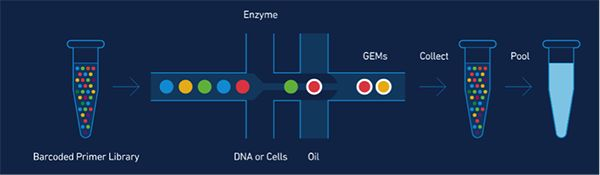

10X Genomics 单细胞测序数据分析报告
Custom:Custom Contract:Contract
简介: 10x Genomics Single Cell 3'是基于微流控技术的单细胞系统，能够同时分离500-10000个群体细胞， 并对这些分离的单细胞中的微量mRNA通过特殊高效反转录扩增后再进行illumina高通量测序， 采用生物信息学手段进行基因表达分析， 此技术实现对细胞群体的划分与细胞群体间基因表达差异的检测，发现新的细胞类型， 基于群体单细胞基因表达数据，是研究肿瘤细胞异质性、免疫细胞群体检测以及胚胎发育研究的黄金方法。。 10x Genomics单细胞应用广泛，可应用的细胞类型有:生殖细胞，胚胎细胞，神经细胞，免疫细胞，肿瘤细胞，干细胞，其他原代细胞。。
图A: 10X Genomics单细胞的简介
